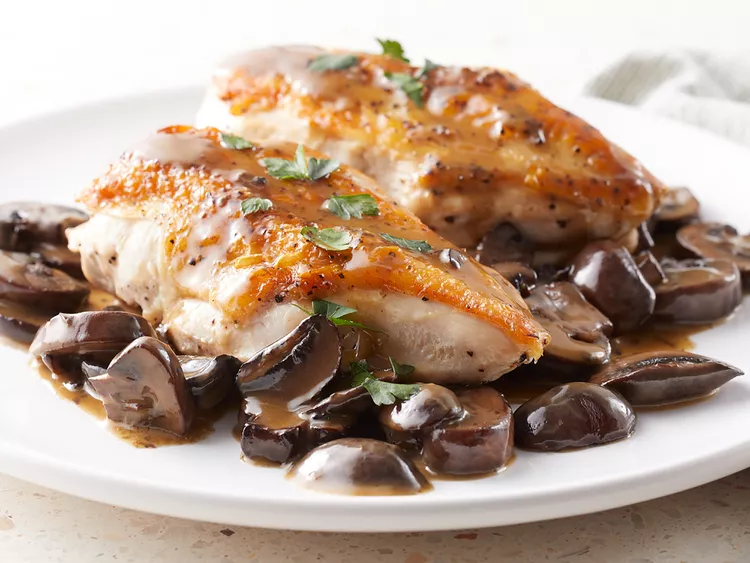

Chicken and Mushrooms

Description
This chicken and mushroom recipe is quick and easy. Pan-roasted chicken breast topped with a mushroom sauce.
Ingredients
- 2 skin-on chicken breast halves
- Salt and ground black pepper to taste
- 2 tablespoons olive oil
- 8 ounces fresh mushrooms, sliced 1/4 inch thick
- 1 pinch salt
- 1 tablespoon butter
Steps
- Preheat oven to 400 degrees fahrenheit.
- Season chicken on all sides with salt and ground black pepper.
- Heat olive oil over medium-high heat in an ovenproof skillet. Place chicken skin-side down in skillet and cook until skin is golden brown.
- Flip chicken and add mushrooms around the chicken. Season mushrooms with salt and increase heat to high. Stir mushrooms occasionally and cook for about 5 minutes.
- Transfer skillet to preheated oven and cook until chicken is fully-cooked, about 15-20 minutes. Once cooked, remove chicken on a plate and loosely cover with aluminum foil.
- Place skillet with mushrooms over medium-high heat. While stirring occasionally, scrape the bottom of the skillet. Add water and bring to a boil. Continue scraping the bottom of the skillet and reduce water by half.
- Add butter and any residual juices on the plate of chicken to the mushrooms. Stir constantly until butter is melted and sauce is formed. Season with salt and ground black pepper to taste. Pour mushroom sauce over chicken and serve.
Check out these other recipes